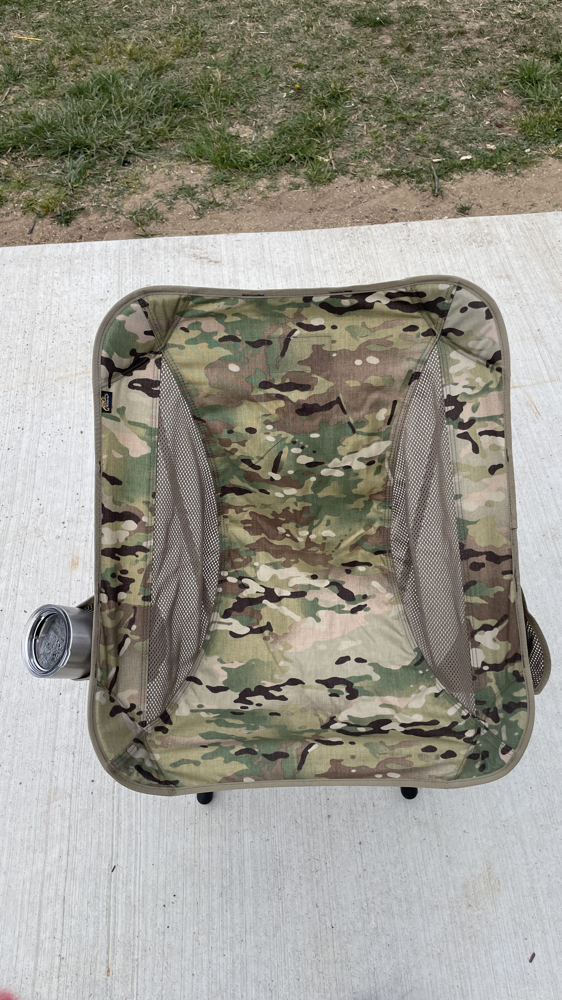
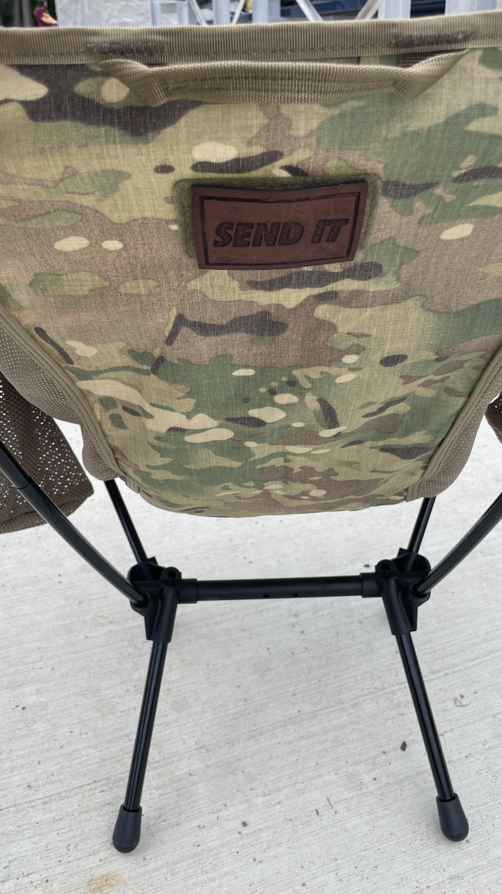
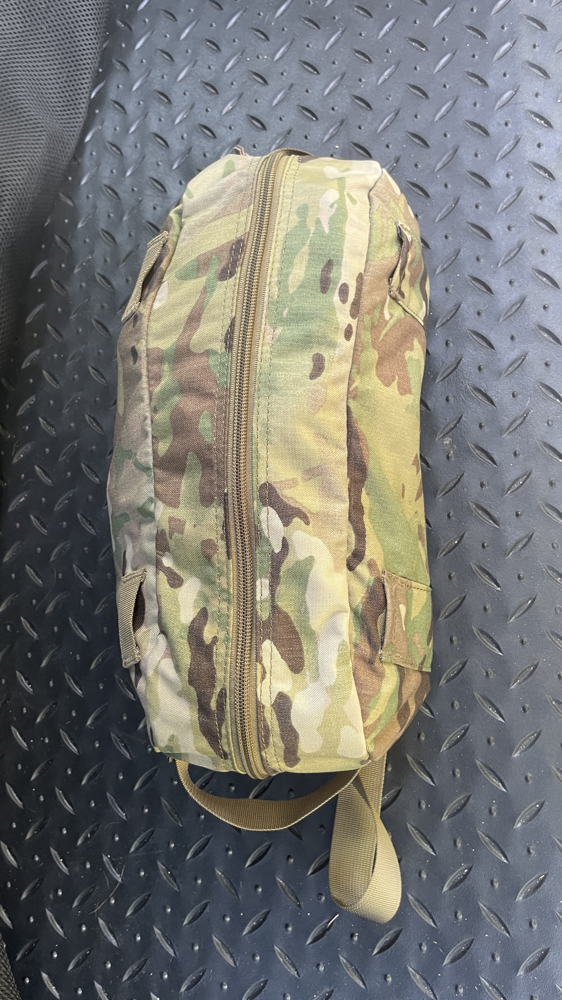

At the end of a long hike, having an actual place to sit that isn't a cold rock or a damp log makes a bigger difference than people think. The Traveler Chair manages to strike a really solid balance between comfort, portability, and practicality without turning into another bulky piece of gear you regret bringing halfway up the trail.
And honestly, this isn't just a trail chair.
It packs down small enough that it barely takes up space in the back of the car, which also makes it great for sitting on the sidelines at your kid's baseball game, hanging around a campsite, or just keeping stashed away for whenever you need a comfortable seat that doesn't eat up room.
Lightweight Without Feeling Fragile
One of the first things I appreciated about the Traveler Chair is that it doesn't feel oversized or cumbersome. Some portable camping chairs almost defeat the purpose by taking up too much room in your pack.
This one stays compact while still feeling stable once assembled.
I opted for the Multicam version because, let's be honest, Multicam is always cool.

The included rubber feet are also a nice touch. If you're setting up on slick rocks or uneven terrain, they help keep the chair planted a little better. If you're really counting ounces, you can leave them behind and shave a bit of weight off the setup.

Setup Is Surprisingly Simple
At my best attempt, setup took me about 92 seconds.
The shock-corded frame design makes a massive difference here. Everything naturally falls into place without needing to sort through a pile of loose poles trying to figure out what goes where.
I've used other chairs that rely on separate pole sections plugging into a hub system, and while they work, they can become annoying pretty quickly, especially in low light or after a long day outside.
With the Traveler Chair, the shock cord running through the frame keeps things organized enough that you could almost assemble it in the dark.
Setup Tip
One tip that made setup easier for me. Start by inserting the poles into the base of the chair first, then stretch the seat material onto the upper back poles afterward. That method seemed to require the least amount of fighting with the fabric tension during assembly.
Small Details That Actually Matter
Helikon-Tex clearly spent time thinking about usability with this chair.
The side pockets are intentionally different sizes, which sounds minor until you realize one can handle a larger bottle or cup while the other is better suited for smaller gear you want nearby while relaxing around camp.
There's also a small loop field on the back for morale patches because, realistically, if multiple people in camp are running similar gear setups, it's an easy way to identify your chair at a glance.
And yes, morale patches automatically make gear cooler.

Peak Camp Comfort: Pair It With the Swagman Roll
One of my favorite ways to use this chair has honestly been pairing it with the Swagman Roll from Helikon-Tex.
If you haven't used one before, the Swagman Roll sits somewhere between a poncho liner, insulated jacket, and lightweight sleeping system. Throw that on while sitting in the Traveler Chair around camp and you can get ridiculously comfortable once temperatures start dropping in the evening.
There's something about settling into a compact camp chair next to a fire after a long hike while wrapped in insulation that just feels rewarding in a way that's hard to explain unless you've done it.
It turns the chair from a nice thing to have into part of your entire camp comfort setup. The same kind of layered gear thinking I leaned on with the Helikon-Tex Level 7 Jacket applies here.
Packs Small, Travels Smaller
When it's broken down, the Traveler Chair stuffs into a compact carrying bag that fits inside a daypack with room to spare. The whole package is small enough that bringing it along stops feeling like a real decision and starts feeling automatic.

That portability is honestly what changes how often you actually use it. Gear that's a hassle to carry tends to get left behind. This one doesn't.
The Traveler Lightweight Chair feels like one of those pieces of gear that quietly earns its place over time. It packs small, sets up quickly, stays comfortable enough for extended use, and works just as well for everyday outings as it does for backpacking trips. Gear that can serve multiple purposes is easier to justify carrying, storing, and recommending. This one's earned its spot.
Like the Helikon-Tex Numbat Small chest pack, the Traveler Chair fits into a category of outdoor gear that quietly improves how you spend time outside without demanding attention. That's usually the gear that ends up staying in the rotation.